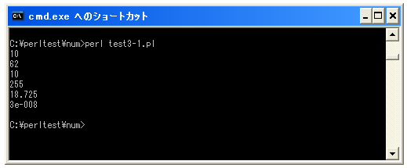
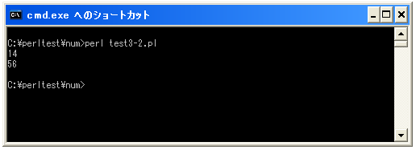

数値
数値は整数や浮動小数点数など普段使用している数値と同じものです。数値は計算などを行うことができます。
Perlでで数値を表現する場合にはそのまま記述します。
352 27.346
数値は大きく分けると整数のものと小数点を含む実数に分けることができます。実数は浮動小数点数と呼びます。よく使われる言葉ですので覚えておいて下さい。
整数を表す場合、10進数だけではなく2進数、8進数、16進数を使用することが出来ます。10進数であればそのまま記述しますが8進数の場合は先頭に「0」を付けて記述し、16進数の場合は先頭に「0x」を付けて記述し、2進数の場合は先頭に「0b」を付けて記述します。
25 045 0x3E 0b11111111
浮動小数点数を表すには固定小数点形式を使った記述方法の他に指数表現も行えます。
1.35 3E-8
※3E-8とは3掛け10の-8乗です。
サンプルプログラム
では簡単なプログラムで確認して見ます。
use strict; use warnings; use utf8; binmode STDIN, ':encoding(cp932)'; binmode STDOUT, ':encoding(cp932)'; binmode STDERR, ':encoding(cp932)'; print 10; print "¥n"; print 0x3E; print "¥n"; print 012; print "¥n"; print 0b11111111; print "¥n"; print 18.725; print "¥n"; print 3E-8; print "¥n";
上記を「test3-1.pl」の名前で保存します(文字コードはUTF-8です)。そしてコマンドプロンプトを起動し、プログラムを保存したディレクトリに移動してから次のように実行して下さい。

実際に実行して頂くと分かりますが、整数に関しては8進数や16進数で表現したとしても10進数の数値として扱われます。8進数や16進数として画面に出力したい場合には「sprintf」などの関数を使います。詳しくはまた別の箇所で解説します。
計算結果を表示
数値が文字と大きく異なる点として計算を行うことができます。四則演算は別のページで詳しく見ていきますが、ここでは簡単な例と結果だけを見てください。
下記のサンプルでは数値をそのまま表示する代わりに「10 + 4」の足し算の結果と「8 * 7」の掛け算の結果を表示しています。
use strict; use warnings; use utf8; binmode STDIN, ':encoding(cp932)'; binmode STDOUT, ':encoding(cp932)'; binmode STDERR, ':encoding(cp932)'; print 10 + 4; print "¥n"; print 8 * 7; print "¥n";
上記を「test3-2.pl」の名前で保存します(文字コードはUTF-8です)。そしてコマンドプロンプトを起動し、プログラムを保存したディレクトリに移動してから次のように実行して下さい。

今回のサンプルでは「10 + 4」の結果である「14」と「8 * 7」の結果である「56」が表示されています。
( Written by Tatsuo Ikura )

著者 / TATSUO IKURA
初心者～中級者の方を対象としたプログラミング方法や開発環境の構築の解説を行うサイトの運営を行っています。